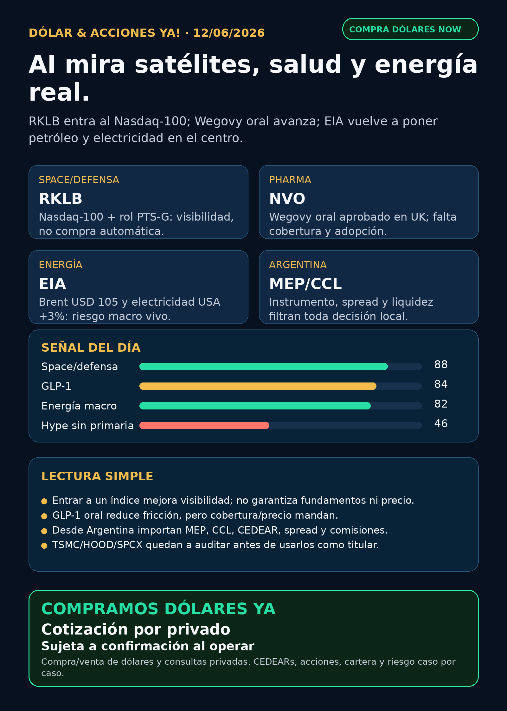

Dólar & Acciones YA!
RKLB entra al Nasdaq-100; Wegovy oral aprobado en UK; EIA marca petróleo y electricidad como riesgo central. Capa Argentina: MEP, CCL y CEDEARs.
DÓLAR · CEDEARs · ACCIONES · RIESGOServicio privado por mensaje. Cotización de dólar sujeta a confirmación al operar.

Audio suspendido
Por instrucción vigente de Charly del 05/06/2026, esta edición no genera ni adjunta voz/TTS. El reporte completo queda en texto y pack descargable.
Links útiles
Dólar & Acciones YA! — 12/06/2026
Reporte educativo para entender dólar, acciones, CEDEARs, energía, AI, pharma, defensa, space y riesgo desde Argentina. Ordenado por valor educativo y señal de radar, no por recomendación de compra.
1. Lectura simple del día
La lectura simple: la plata vuelve a mirar cosas reales. Satélites y defensa, pastillas GLP-1, petróleo/electricidad, chips físicos y dólar Argentina. AI sigue importando, pero el cuello de botella no es solo software: es infraestructura, energía, supply chain, regulación y acceso al instrumento correcto.
En criollo: una empresa puede ser buenísima y aun así no ser buena inversión al precio actual; un ticker de Estados Unidos puede no tener buen vehículo local; y un CEDEAR puede moverse por la acción, pero también por CCL, spread, liquidez y comisiones.
2. Tesis central
La tesis de hoy es: AI y tecnología se están mezclando con infraestructura física. Lo importante no es perseguir el ticker más viral, sino separar:
- señal verificada;
- hype de redes;
- instrumento comprable global/US;
- instrumento o proxy posible desde Argentina;
- precio, liquidez, spread y tamaño dentro de cartera.
3. Ranking educativo por calidad de señal — no es orden de compra
1) Rocket Lab / RKLB — space, defensa e index flows
Qué pasó: Nasdaq/GlobeNewswire informó que Rocket Lab (RKLB) entra al Nasdaq-100, efectivo antes de la apertura del 22/06/2026. En paralelo, SpaceNews reportó que K2 Space y Rocket Lab ganaron roles de supplier de spacecraft bus/platform para SES/Viasat dentro de PTS-G, programa de satcom militar protegido.
Por qué importa: esto junta dos capas: visibilidad institucional por índice y tesis space/defensa real. Pero ojo: entrar a un índice puede traer flujo pasivo y volatilidad, no mejora automáticamente márgenes, caja ni valuación.
Estado: señal fortalecida / en seguimiento. No es recomendación de compra.
Riesgo: alto beta, ejecución, valuación, dilución, contratos de defensa y volatilidad por index flows.
Fuentes:
- Nasdaq/GlobeNewswire vía Yahoo Finance: https://finance.yahoo.com/markets/world-indices/articles/nasdaq-100-index-june-2026-000000273.html
- SpaceNews: https://spacenews.com/k2-space-rocket-lab-win-key-supplier-roles-in-space-force-satcom-program/
2) Novo Nordisk / NVO — GLP-1 oral aprobado en UK
Qué pasó: la MHRA del Reino Unido aprobó el primer comprimido GLP-1 para weight loss/weight management: semaglutide/Wegovy tablet de Novo Nordisk. La publicación oficial aclara que es prescription-only y que no está disponible actualmente vía NHS hasta evaluación NICE.
Por qué importa: pasar de inyección a pastilla reduce fricción y puede agrandar el mercado. Pero el negocio no cambia solo por la aprobación: faltan cobertura, precio, supply, adopción real y competencia de Lilly.
Estado: señal fortalecida / pharma en radar.
Riesgo: valuación, presión de precios, cobertura médica, competencia Lilly/Novo/AstraZeneca, seguridad y capacidad de producción.
Fuente primaria: https://www.gov.uk/government/news/first-glp-1-tablet-for-weight-loss-approved-in-the-uk
3) Energía — petróleo, gas, electricidad y Argentina
Qué pasó: el Short-Term Energy Outlook de EIA publicado el 09/06/2026 asume Strait of Hormuz cerrado en el near term, Brent promedio de USD 105 por barril en junio-julio, demanda global de oil cayendo 1,1 millones de barriles por día en 2026, y generación eléctrica de verano en EE.UU. +3% contra 2025.
Por qué importa: energía vuelve a ser riesgo macro y oportunidad de investigación. No es solo “data centers necesitan luz”; también hay shock geopolítico, petróleo, gas, inflación, utilities y margen de empresas industriales.
Estado: vigilar / riesgo macro sube.
Capa Argentina: YPF, VIST, Pampa Energía, TGS y Central Puerto quedan en radar educativo, pero antes de hablar de ejecución hay que mirar precio local, CCL/MEP, liquidez, spread y balance.
Fuente primaria: https://www.eia.gov/outlooks/steo/
4) Apple / AAPL — distribución de AI, no moat automático
Qué pasó: Apple anunció WWDC26 con próxima generación de Apple Intelligence y Siri AI para iOS, iPadOS, macOS, watchOS, visionOS y tvOS 27.
Por qué importa: Apple tiene distribución masiva; si AI entra bien en el dispositivo, puede afectar upgrade cycle y retención. Pero todavía no alcanza para venderlo como moat AI confirmado: falta monetización, adopción, calidad de producto y competencia contra Google/OpenAI/Anthropic.
Estado: vigilar.
Fuente primaria: https://www.apple.com/newsroom/2026/06/apple-unveils-next-generation-of-apple-intelligence-siri-ai-and-more/
5) TSMC / TSM — señal de chips con auditoría pendiente
Google News RSS detectó varias fuentes reportando revenue de mayo 2026 de TSMC +30,1% interanual por demanda AI, pero la fuente oficial de TSMC quedó bloqueada por Cloudflare en esta corrida. Para el informe público esto queda como señal a auditar, no como claim fuerte.
Estado: vigilar / auditoría primaria pendiente.
4. Capa Argentina — dólar, MEP, CCL y CEDEARs
Referencias públicas consultadas el 12/06/2026 alrededor de las 08:49 AR:
- BlueLytics oficial venta: $1.454,00. Última actualización: 2026-06-12T08:45:52.622947-03:00.
- BlueLytics blue venta: $1.450,00. Última actualización: 2026-06-12T08:45:52.622947-03:00.
- CriptoYa blue venta: $1.450,00. Timestamp: 12/06 08:48 AR.
- CriptoYa MEP AL30 24hs: $1.450,46. Timestamp: 11/06 16:56 AR. Puede venir de cierre previo; no venderlo como cotización intradiaria de broker.
- CriptoYa CCL AL30 24hs: $1.494,89. Timestamp: 11/06 16:56 AR. Puede venir de cierre previo.
- CriptoYa USDT venta: $1.498,79. Referencia cripto, no reemplaza broker ni mercado regulado.
Traducción en criollo:
- MEP: forma de dolarizar vía bonos; puede tener parking, spread, comisiones y diferencia entre compra/venta.
- CCL: tipo de cambio implícito que afecta CEDEARs y acciones extranjeras miradas desde Argentina.
- CEDEAR: no es la acción directa de Estados Unidos; tiene ratio, liquidez local, spread y horario propio.
- Spread: diferencia entre comprar y vender. Si es ancho, entrás perdiendo.
- Buena empresa ≠ buena operación: antes de mover plata real importan precio, horizonte, tamaño, riesgo y liquidez.
5. Watchlist base — seguimiento rápido
- RKLB: señal fortalecida por Nasdaq-100 + Space Force/PTS-G. En radar; alto beta.
- NVDA: moat estructural AI compute vigente; sin noticia primaria propia nueva en esta corrida.
- PLTR: revisado; sin fuente primaria fresca fuerte.
- TSM: señal de revenue por AI en discovery, primaria pendiente.
- MU: HBM/memoria sigue relevante; sin señal primaria nueva fuerte.
- GOOG/GOOGL: cloud, TPUs, datos y Waymo siguen estructuralmente relevantes; sin señal primaria nueva fuerte hoy.
- AAPL: WWDC26/Siri AI verificado; vigilar, no moat automático.
- HOOD: AI-powered trading apareció en secundaria; falta primaria Robinhood para usar como titular.
- TSLA: autonomía/robotaxi revisado; sin señal verificable fuerte en esta corrida.
- ASML: litografía crítica; ASML sí, all-in no. Sin novedad primaria fresca.
- Gold / GLD / GOLD / B: desambiguar siempre. GLD es ETF oro; GOLD suele ser Barrick; Broadcom es AVGO, no B.
- RVI: fondo cerrado/wrapper privado; no operating company. Sin actualización verificable hoy.
- SNDK: storage/NAND/SSD para data centers; revisado sin señal nueva central.
- CBRS: radar alto de AI chips si aparece instrumento/filing; requiere SEC, clientes, TSMC, lockups y acceso.
- AVGO: custom silicon/networking central en AI; sin claim nuevo superior hoy.
6. Energía y farmacéuticas/salud
Energía: EIA fue la fuente más fuerte del día. Oil shock + electricidad refuerzan mirar energía global y Argentina. Carril local revisado: YPF, VIST, PAMP, TGS, CEPU. Sin precio local/broker verificado para hablar de ejecución.
Pharma/salud: NVO se fortaleció por aprobación MHRA de Wegovy oral. LLY sigue como competidor estructural en GLP-1, pero claims de cobertura empleadores/Reuters quedaron en auditoría por bloqueo DataDome. No elevar como verdad hasta fuente accesible.
7. Defensa, aerospace, space y physical AI
- Defensa/guerra física: revisado. RKLB/space defense fue la señal verificable más fuerte. GE Aerospace mantiene tesis industrial por backlog/aftermarket de corridas previas, pero sin noticia primaria nueva hoy. AVAV, KTOS, RTX, LMT, NOC, GD, HWM, BA, ITA/XAR revisados sin señal primaria nueva fuerte.
- Space/orbital AI: RKLB lidera la señal del día. SpaceX/SPCX sigue como lane central si hay S-1/evento público, pero no accionable automáticamente hasta efectividad, precio, fecha, float, liquidez y acceso Argentina/US.
- Autonomous mobility / physical AI: Tesla, Waymo/Alphabet, Uber, Zoox/Amazon y Joby revisados; sin señal verificable nueva fuerte hoy.
8. Radar amplio fuera de watchlist
- ALAB, CRWV, NBIS, TER: entran al Nasdaq-100 junto con RKLB. Señal de institucionalización de AI/cloud/infra, no recomendación de compra.
- DXYZ/RVI/ARKVX/AGIX/XOVR/VCX/Forge: siguen como educación sobre private markets. Wrapper/fondo no es exposición directa limpia a SpaceX/OpenAI/Anthropic; mirar NAV, premium/descuento, fees y liquidez.
- Crypto gobernado: sin input nuevo y sin auditoría on-chain. No mezclar con acciones/PPI ni elevar tokens virales.
9. Red flags / hype para ignorar
- “RKLB entra al Nasdaq-100, entonces compra segura”: falso. Es visibilidad y flujo potencial, no fundamentos garantizados.
- “GLP-1 oral aprobado = revenue inmediato”: falso. Faltan cobertura, precio, adopción y supply.
- “TSMC +30,1% ya está confirmado”: en esta corrida no quedó primaria accesible; queda a auditar.
- “SpaceX/SPCX ya es compra desde Argentina”: no. Falta efectividad/listing/precio/liquidez/acceso.
- “AI trading agents hacen plata solos”: no. Requieren datos correctos, controles, ledger, paper mode, aprobación humana y límites de riesgo.
10. Próximo paso concreto
Para decisión humana, mirar hoy:
- Si RKLB sostiene señal sin perseguir precio por index hype.
- Cobertura/adopción real de Wegovy oral y respuesta competitiva de Lilly.
- MEP/CCL y petróleo si energía sigue moviendo inflación y CEDEARs.
- Fuente primaria de TSMC para confirmar revenue mensual.
- Cualquier filing/SEC/fact sheet fresco de DXYZ/RVI/SPCX antes de hablar de private wrappers.
11. Servicio privado
Si querés comprar o vender dólares, invertir en acciones/CEDEARs o revisar una cartera con más contexto, escribime por privado y se ve caso por caso: monto, plazo, riesgo, liquidez, instrumento y tipo de cambio.
Compramos dólares: cotización por privado, sujeta a confirmación al momento de operar.
Disclaimer
No es asesoramiento financiero personalizado. Es research educativo para decisión humana. Antes de comprar, vender o mover cartera, hay que mirar precio de entrada, horizonte, riesgo, liquidez, impuestos, comisiones, broker y tolerancia personal.
Servicio privado
Dólar · CEDEARs · Acciones · Riesgo. Compra/venta de dólares y consultas privadas caso por caso. Cotización sujeta a confirmación al operar.
Seguir el canal de WhatsApp · Web oficial Simulación Uno Finanzas